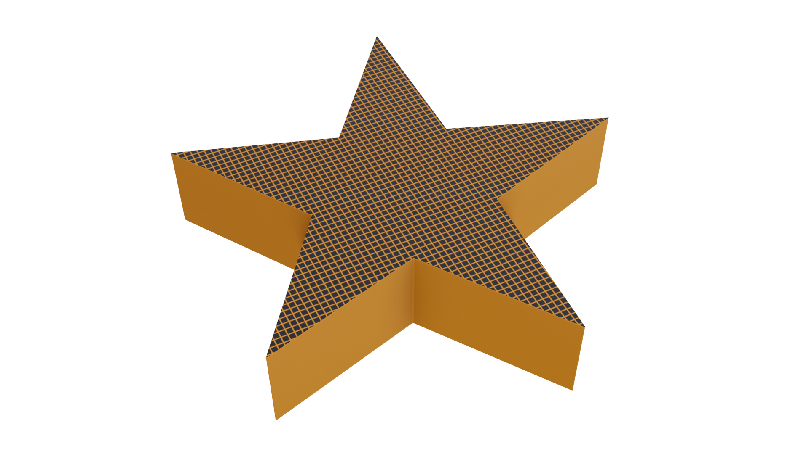
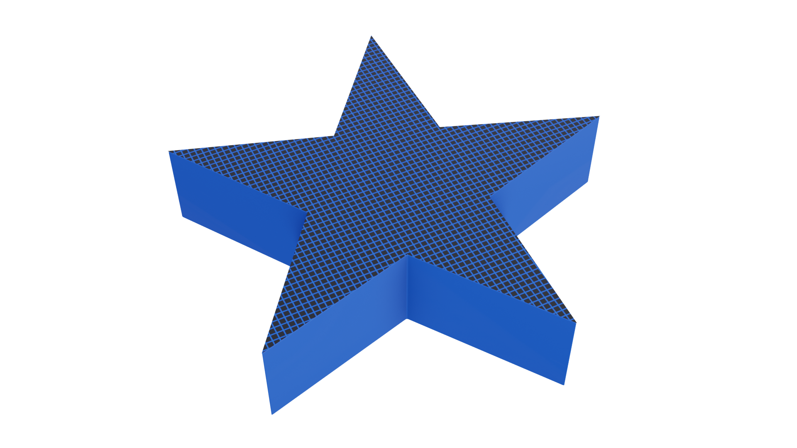
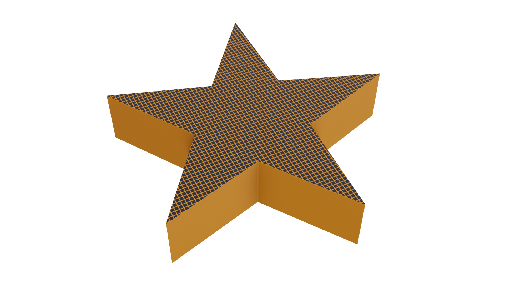
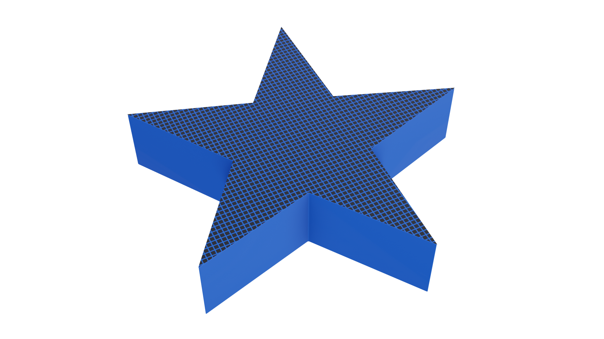

1. Przygotuj plik cyfrowy modelu 3D w programie typu slicer - kliknij na ikonę komputera.
2. Dostosuj parametry wydruku. Wybierz rodzaj materiału, wysokość warstwy oraz procent wypełnienia.
3. Wygeneruj GCode.
4. Zamontuj w podajniku szpulę z wybranym wcześniej materiałem
i kliknij przycisk drukuj. 5. Wybierz sposób wykończenia powierzchni modelu.
i kliknij przycisk drukuj. 5. Wybierz sposób wykończenia powierzchni modelu.
ABS – wysoka wytrzymałość, dobry do obróbki mechanicznej, większy skurcz
PLA – przyjazny środowisku, kruchy (zalecana minimalna obróbka mechaniczna), mały skurcz
PET-G – dobra wytrzymałość, lekko elastyczny, duża przyczepność warstw, mały skurcz
Wysokość warstwy druku – im mniejsza wysokość, tym dokładniejszy, ale trwający dłużej wydruk
Wypełnienie – określane w procentach;im większe, tym większa wytrzymałość przedmiotu, ale także większy koszt i dłuższy czas druku 3D
Metody obróbki końcowej:
szlifowanie – bardzo gładka powierzchnia, ale nie każdy materiał można szlifować;
pokrycie warstwą żywicy – warstwa żywicy powinna być cienka, aby nie zmienić kształtu przedmiotu;
ogrzanie i nadtopienie zewnętrznej warstwy elementu – należy bardzo uważać, aby zbyt mocno nie stopić elementu.
1. Przygotuj plik cyfrowy modelu 3D w programie typu slicer - kliknij na ikonę komputera.
2. Dostosuj parametry wydruku. Ustaw podpory, wybierz rodzaj brzegów i prędkość druku. Parametry retrakcji zostaną automatycznie zoptymalizowane do wybranej prędkości przemieszczania się ekstrudera.
3. Wygeneruj GCode.
4. Zamontuj w podajniku szpulę z wybranym wcześniej materiałem i kliknij przycisk “drukuj”.
- Przy druku przedmiotów z wystającymi elementami konieczne jest zastosowanie podpór.
- Dla poprawy jakości wydruku 3D można stosować dodatkowe struktury, takie jak: brim, raft i skirt.
- Od prędkości przemieszczania się ekstrudera zależy nie tylko czas, ale także jakość wydruku.
- Od ustawienia parametrów retrakcji (długości i prędkości) zależy, czy między rozdzielonymi powierzchniami drukowanego przedmiotu będą występowały cienkie nitki materiału, czy nie.
Korzystając z ABS, możemy otrzymać elementy o stosunkowo wysokiej wytrzymałości mechanicznej i temperaturowej. Przedmioty wykonane z tego materiału dobrze nadają się do dalszej obróbki mechanicznej, np. wiercenia lub szlifowania, bez ryzyka pęknięcia. Ze względu na skurcz materiału, ABS wymaga wykonania druku ze stałą temperaturą.
PLA to materiał przyjazny środowisku. Jest tani i łatwy w użyciu, a także ma mały skurcz. Przedmioty wykonane z tego materiału mają jednak niedużą wytrzymałość. Ze względu na kruchość powinny być poddawane niewielkiej obróbce końcowej.
PET-G to materiał, który łączy pozytywne cechy ABS i PLA. Ma niewielki skurcz, dzięki czemu wydruk z niego jest dosyć łatwy. Wysoka przyczepność warstw zapewnia przedmiotom wykonanym z tego materiału większą wytrzymałość. Elementy wykonane z PET-G są w miarę elastyczne i odporne na uderzenia.
Wysokość warstwy druku to jeden z parametrów, który należy ustawić w drukarce 3D. Od wysokości warstwy zależy dokładność wykonanego elementu oraz jakość jego powierzchni bocznych. Ma ona także wpływ na czas drukowania przedmiotu.
Wypełnienie to kolejny parametr, który możemy ustawić w drukarce 3D. Zależy od niego wytrzymałość i masa drukowanego elementu. Im większe wypełnienie, tym większa wytrzymałość oraz masa. Większe wypełnienie wydłuża czas i podwyższa koszt druku 3D. Ten parametr określa się w procentach.
Istnieją różne metody obróbki końcowej, której zadaniem jest nadanie lepszego wyglądu powierzchni zewnętrznej elementów, wykonanych metodą druku 3D. Poszczególne elementy można wykończyć szlifując je, nakładając na ich powierzchnię cienką warstwę żywicy lub podgrzewając tak, żeby lekko nadtopić zewnętrzną warstwę materiału, z którego został wykonany przedmiot. Wybór obróbki końcowej zależy od użytego materiału, zamierzonego czasu i kosztów pracy, a także efektu końcowego, jaki chcemy uzyskać.
Pierwsze warstwy wydruku mogą mieć bardzo duże znaczenie dla jakości i poprawności wykonania przedmiotu. Przy ich wykonaniu można zastosować dodatkowe struktury, takie jak:
• raft – poziomą powierzchnię, na której umieszczony jest właściwy drukowany przedmiot;
• brim – kilka obrysów wokół drukowanego przedmiotu;
• skirt – pojedynczy obrys wokół drukowanego przedmiotu, który nie dotyka samego przedmiotu.
Zadaniem dwóch pierwszych struktur jest przede wszystkim zwiększenie adhezji drukowanego przedmiotu do stołu roboczego drukarki. Ostatnia struktura pomaga przy prawidłowym rozpoczęciu wydruku.
Prędkość druku 3D zależy od prędkości, z jaką przemieszcza się ekstruder. Należy ustawić dwa parametry, czyli prędkość przemieszczania się ekstrudera w czasie nakładania materiału oraz prędkość przemieszczania się ekstrudera nad miejscami, w których nie nakłada on materiału. Od prędkości zależy zarówno czas, jak i jakość druku.
Retrakcja polega na zatrzymaniu i cofnięciu materiału z dyszy ekstrudera w przypadku druku powierzchni nieciągłych. Przy źle dobranych parametrach retrakcji (długości i prędkości), pomiędzy powierzchniami przedmiotu powstają cienkie nitki materiału. Prawidłowe ustawienie parametrów retrakcji zapobiega takiemu zjawisku.
W przypadku wydruku przedmiotu z wystającymi elementami, które są niejako zawieszone w powietrzu, konieczne jest zastosowanie podpór. W przeciwnym razie wydruk się nie uda, ponieważ tylko częściowo wystające wydrukowane elementy nie mają odpowiedniej wytrzymałości i bez odpowiednich podpór nie da się ich wydrukować.
Mając do dyspozycji filamenty: ABS, PLA i PET-G, przygotuj projekt, a następnie wydrukuj ozdobę choinkową o wysokości 2,8 cm i szerokości 5 cm. Wydruk powinien zostać wykonany w oparciu o następujące parametry: wysokość warstwy - 0,28 mm, procent wypełnienia - 50%. Gotowy produkt poddaj wybranej przez Ciebie obróbce końcowej.
Materiał
Wysokość warstwy
Procent wypełnienia

Wpisz poprawne wartości wysokości warstwy i procentu wypełnienia.

Wybierz kolor wybrany we wcześniejszym etapie

 



Wydrukuj jedną z brakujących liter przestrzennego loga pewnej firmy. Wydruk wykonaj przy użyciu filamentu ABS.
Brzegi
Prędkość przemieszczania się ekstrudera
Długość retrakcji
Prędkość retrakcji

Przy druku przedmiotów z wystającymi elementami konieczne jest zastosowanie podpór.